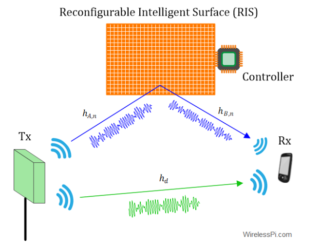

Surfaces Intelligentes Reconfigurables
Veille Technologique – Technologie Émergente · BTS SIO SISR
Surfaces Intelligentes Reconfigurables (RIS)
Les surfaces intelligentes reconfigurables sont une innovation prometteuse dans le domaine des communications sans fil et de l'Internet des Objets (IoT). Elles utilisent des matériaux avancés et des algorithmes intelligents pour manipuler les ondes électromagnétiques, permettant d'améliorer la capacité et la couverture des réseaux sans fil.
Applications et Avantages
- Optimisation des Réseaux Sans Fil : Les RIS peuvent transformer des murs et des surfaces ordinaires en composants intelligents d'un réseau, améliorant la fiabilité et l'efficacité de la communication radio dans des environnements complexes tels que les usines intelligentes et les réseaux de véhicules.
- Économie d'Énergie : En contrôlant et en redirigeant les ondes électromagnétiques de manière optimale, les RIS contribuent à une utilisation plus efficace de l'énergie dans les réseaux de communication — crucial avec l'arrivée des réseaux 6G.
- Déploiement Rapide : Ces surfaces peuvent être rapidement installées et reconfigurées, offrant des solutions de communication rapides dans des situations d'urgence ou dans des régions éloignées où les infrastructures traditionnelles sont absentes.

Vidéo Explicative
Pour une explication visuelle et détaillée des surfaces intelligentes reconfigurables, vous pouvez consulter cette vidéo sur les "Reconfigurable Intelligent Surfaces" par Rohde & Schwarz (IEEE Spectrum) :
Pourquoi cette Technologie est Pertinente
Dans le contexte d'une formation BTS SIO option SISR, comprendre et analyser l'impact des RIS apporte un avantage significatif. Ces technologies touchent aux domaines des réseaux informatiques, de la gestion de la sécurité de l'information et de la gestion des infrastructures — toutes des compétences clés du programme SISR.
Conclusion
Les surfaces intelligentes reconfigurables représentent une avancée technologique majeure avec des implications vastes pour les réseaux de communication et l'IoT. Elles permettent non seulement d'optimiser l'efficacité énergétique des infrastructures de communication, mais aussi de renforcer la sécurité des données en modulant les signaux de manière plus précise.
De plus, l'intégration de ces surfaces dans les réseaux futurs, tels que la 6G, ouvre la voie à des applications encore plus innovantes, facilitant des solutions de connectivité dans des environnements auparavant inaccessibles. Leur capacité à être rapidement déployées et reconfigurées en fait un atout précieux pour répondre aux défis des communications modernes et des infrastructures intelligentes.